Principal components and factor analysis
NOTE: This page has been revised for Spring 2020, but may undergo further edits.
1 Introduction
Principal components analysis (PCA) is a widely used multivariate analysis method, the general aim of which is to reveal systematic covariations among a group of variables. The analysis can be motivated in a number of different ways, including (in geographical contexts) finding groups of variables that measure the same underlying dimensions of a data set, describing the basic anomaly patterns that appear in spatial data sets, or producing a general index of the common variation of a set of variables.
- Example: Davis’ boxes (data, plot, scatter, components), (Davis, J.C., 2001, Statistics and Data Analysis in Geology, Wiley)
- Derivation of principal components
{kind=link}
{kind=link}
{kind=link}
{kind=link}
2 Properties of principal components
Because the components are derived by solving a particular optimization problem, they naturally have some “built-in” properties that are desirable in practice (e.g. maximum variability). In addition, there are a number of other properties of the components that can be derived:
- variances of each component, and the proportion of the total variance of the original variables are are given by the eigenvalues;
- component scores may be calculated, that illustrate the value of each component at each observation;
- component loadings that describe the correlation between each component and each variable may also be obtained;
- the correlations among the original variables can be reproduced by the p-components, as can that part of the correlations “explained” by the first q components.
- the original data can be reproduced by the p components, as can those parts of the original data “explained” by the first q components;
- the components can be “rotated” to increase the interpretability of the components.
3 Derivation of principal components and their properties
The formal derivation of principal components analysis requires the use of matix algebra.
Because the components are derived by solving a particular optimization problem, they naturally have some “built-in” properties that are desirable in practice (e.g. maximum variability). In addition, there are a number of other properties of the components that can be derived:
- variances of each component, and the proportion of the total variance of the original variables are are given by the eigenvalues;
- component scores may be calculated, that illustrate the value of each component at each observation;
- component loadings that describe the correlation between each component and each variable may also be obtained;
- the correlations among the original variables can be reproduced by the p-components, as can that part of the correlations “explained” by the first q components.
- the original data can be reproduced by the p components, as can those parts of the original data “explained” by the first q components;
- the components can be “rotated” to increase the interpretability of the components.
4 PCA Examples
4.1 PCA of a two-variable matrix
A classic data set for illustrating PCA is one that appears in John C. Davis’s 2002 book Statistics and data analysis in geology, Wiley (UO Library, QE48.8 .D38 2002). The data consist of 25 boxes or blocks with random dimensions (the long, intermediate and short axes of the boxes), plus some derived variables, like the length of the longest diagonal that can be contained within a box.
Here’s the data: [boxes.csv]
- Example: Davis’ boxes (data, plot, scatter, components), (Davis, J.C., 2001, Statistics and Data Analysis in Geology, Wiley)
- Derivation of principal components
In this example, a simple two-variable (long-axis length and diagonal length) data set is created using Davis’ artificial data.
# boxes_pca -- principal components analysis of Davis boxes data
boxes.matrix <- data.matrix(cbind(boxes[,1],boxes[,4]))
dimnames(boxes.matrix) <- list(NULL, cbind("long","diag"))Matrix scatter plot of the data (which in this case is a single panel), and the correlation matrix:

## long diag
## long 1.0000000 0.9112586
## diag 0.9112586 1.0000000PCA using the princomp() function from the stats package. The loadings() function extracts the loadings or the correlations between the input variables and the new components, and the the biplot() function creates a biplot a single figure that plots the loadings as vectors and the component scores as points represented by the observation numbers.
## Call:
## princomp(x = boxes.matrix, cor = T)
##
## Standard deviations:
## Comp.1 Comp.2
## 1.382483 0.297895
##
## 2 variables and 25 observations.## Importance of components:
## Comp.1 Comp.2
## Standard deviation 1.3824828 0.2978950
## Proportion of Variance 0.9556293 0.0443707
## Cumulative Proportion 0.9556293 1.0000000##
## Loadings:
## Comp.1 Comp.2
## long 0.707 0.707
## diag 0.707 -0.707
##
## Comp.1 Comp.2
## SS loadings 1.0 1.0
## Proportion Var 0.5 0.5
## Cumulative Var 0.5 1.0
Note the angle between the vectors–the correlation between two variables is equal to the cosine of the angle between the vectors (θ), or r = cos(θ). Here the angle is 24.3201359, which is found by the following R code: acos(cor(boxes.matrix[,1],boxes.matrix[,2]))/((2*pi)/360).
The components can be drawn on the scatter plot as follows,
# get parameters of component lines (after Everitt & Rabe-Hesketh)
load <- boxes_pca$loadings
slope <- load[2,]/load[1,]
mn <- apply(boxes.matrix,2,mean)
intcpt <- mn[2]-(slope*mn[1])
# scatter plot with the two new axes added
par(pty="s") # square plotting frame
xlim <- range(boxes.matrix) # overall min, max
plot(boxes.matrix, xlim=xlim, ylim=xlim, pch=16, col="purple") # both axes same length
abline(intcpt[1],slope[1],lwd=2) # first component solid line
abline(intcpt[2],slope[2],lwd=2,lty=2) # second component dashed
legend("right", legend = c("PC 1", "PC 2"), lty = c(1, 2), lwd = 2, cex = 1)
# projections of points onto PCA 1
y1 <- intcpt[1]+slope[1]*boxes.matrix[,1]
x1 <- (boxes.matrix[,2]-intcpt[1])/slope[1]
y2 <- (y1+boxes.matrix[,2])/2.0
x2 <- (x1+boxes.matrix[,1])/2.0
segments(boxes.matrix[,1],boxes.matrix[,2], x2, y2, lwd=2,col="purple")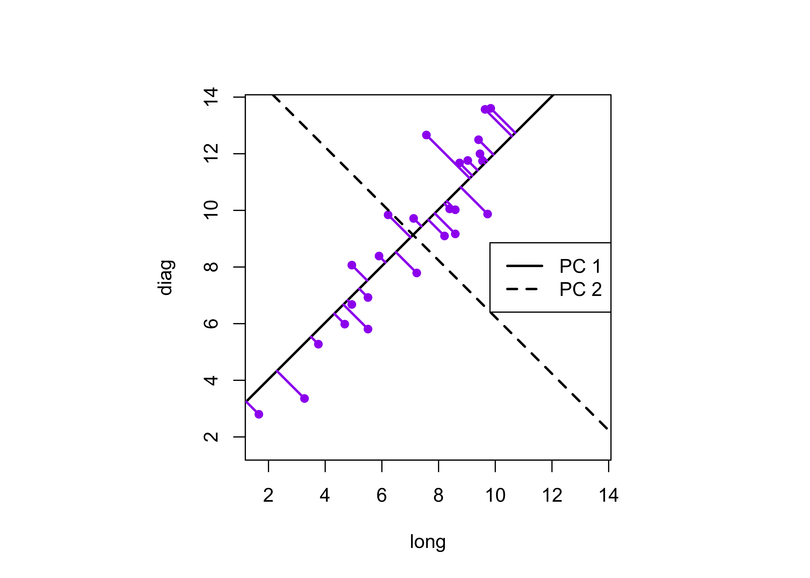
This plot illustrates the idea of the first (or “principal” component) providing an optimal summary of the data–no other line drawn on this scatter plot would produce a set of projected values of the data points onto the line with less variance. The first component also has an application in reduced major axis (RMA) regression in which both x- and y-variables are assumed to have errors or uncertainties, or where there is no clear distinction between a predictor and a response.
4.2 A second example using the large-cites data set
A second example of a simple PCA analysis can be illustrated using the large-cities data set [cities.csv]
Create a data matrix that omits the city names and look at the data and the correlation matrix.
cities_matrix <- data.matrix(cities[,2:12])
rownames(cities_matrix) <- cities[,1] # add city names as row labels4.2.1 Examining the correlation matrix
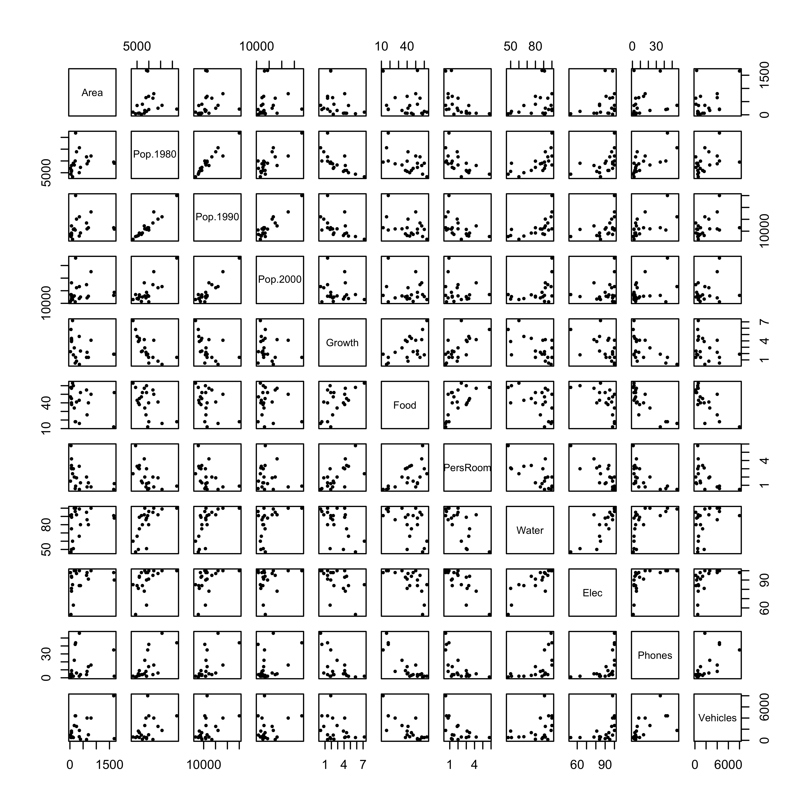
## Area Pop.1980 Pop.1990 Pop.2000 Growth Food PersRoom Water
## Area 1.0000000 0.1776504 0.1482707 0.0811688 -0.3106659 -0.2277181 -0.5172160 0.2941461
## Pop.1980 0.1776504 1.0000000 0.9559486 0.7919490 -0.6935458 -0.5209447 -0.5664580 0.6213565
## Pop.1990 0.1482707 0.9559486 1.0000000 0.9233506 -0.4888987 -0.4080286 -0.4612457 0.5995832
## Pop.2000 0.0811688 0.7919490 0.9233506 1.0000000 -0.1720913 -0.1386787 -0.1876411 0.4545814
## Growth -0.3106659 -0.6935458 -0.4888987 -0.1720913 1.0000000 0.5607890 0.6711674 -0.5594034
## Food -0.2277181 -0.5209447 -0.4080286 -0.1386787 0.5607890 1.0000000 0.6016164 -0.5047112
## PersRoom -0.5172160 -0.5664580 -0.4612457 -0.1876411 0.6711674 0.6016164 1.0000000 -0.6643779
## Water 0.2941461 0.6213565 0.5995832 0.4545814 -0.5594034 -0.5047112 -0.6643779 1.0000000
## Elec 0.2793523 0.4811426 0.4337657 0.2333170 -0.4730705 -0.6207611 -0.7934353 0.8304116
## Phones 0.1393848 0.6734610 0.5870475 0.3669274 -0.5402193 -0.8429700 -0.5926469 0.5512366
## Vehicles 0.4117518 0.4179417 0.4191265 0.2430040 -0.3214298 -0.7610807 -0.5537093 0.4163189
## Elec Phones Vehicles
## Area 0.2793523 0.1393848 0.4117518
## Pop.1980 0.4811426 0.6734610 0.4179417
## Pop.1990 0.4337657 0.5870475 0.4191265
## Pop.2000 0.2333170 0.3669274 0.2430040
## Growth -0.4730705 -0.5402193 -0.3214298
## Food -0.6207611 -0.8429700 -0.7610807
## PersRoom -0.7934353 -0.5926469 -0.5537093
## Water 0.8304116 0.5512366 0.4163189
## Elec 1.0000000 0.5180646 0.5019066
## Phones 0.5180646 1.0000000 0.6303538
## Vehicles 0.5019066 0.6303538 1.0000000Matrix scatter plots, particularly those for a data set with a large number of variables are some times difficult to interpret. Two alternative plots are available: 1) a generalized depiction of the correlation matrix using the corrplot() function, and 2) a plot of the correlations as a network of links (“edges”) between variables (“nodes”) provided by the qgraph() function in the package of the same name.
The corrplot() function displays the correlation matrix using a set of little ellipses that provide a generalized dipiction of the strength and sign of a correlation.
## corrplot 0.84 loaded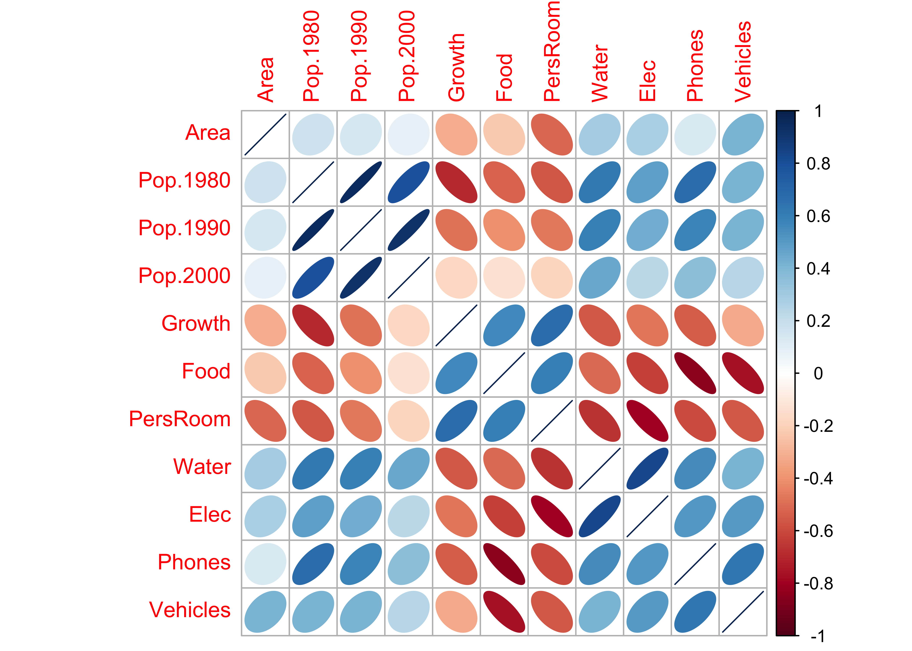
An alternative is simply fill each cell with an appropriate color and shade.
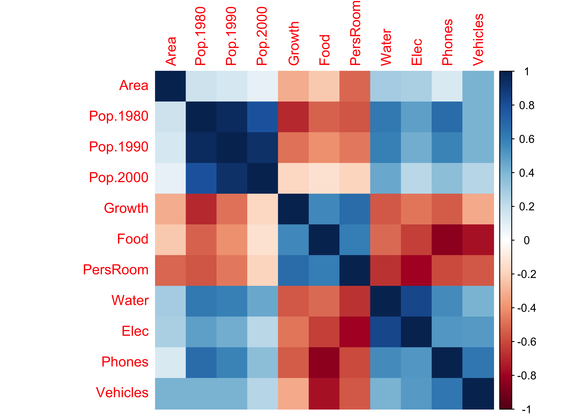
Rectangular areas of similar sign and magnitude of the correlation identify groups of variables that tend to covary together across the observations. For example, the three population variables are postively correlated with one another, and are inversely correlated with Growth, Food and PersRoom.
Another way of depicting the correlations is as a network of line segments, which are drawn to illustrate the strength and sign of the correlations between each pair of variables. This plotting procedure uses the qgraph package for plotting networks, defined here by the correlations among variables (and later, among variables and components).
## Registered S3 methods overwritten by 'huge':
## method from
## plot.sim BDgraph
## print.sim BDgraph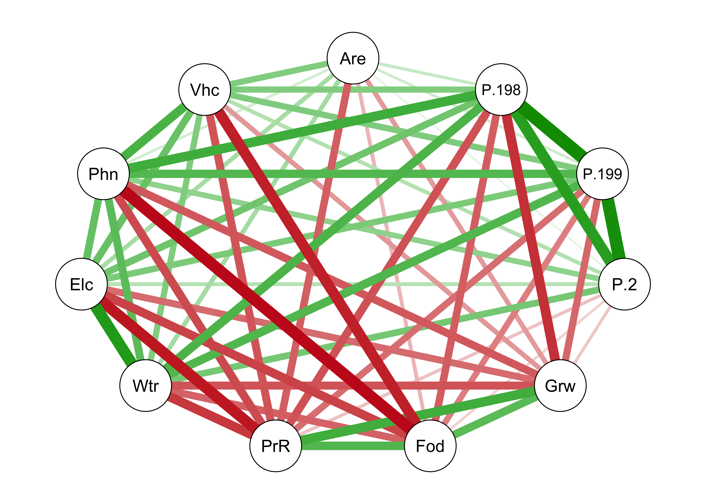
Note that in the above plot, the variable names are abbreviated using just three characters. Most of the time this is enough.
A modification of the basic qgraph() plot involves arranging the nodes in a way that locates more highly correlated variables closer to one another (a “force-embedded” layout), specified by the layout="spring" argument. This approach uses the “Fruchterman-Reingold” algorithm that invokes the concept of spring tension pulling the nodes of the more highly correlated variables toward one another. The sign of the correlations are indicated by color: positive correlations are green, negative magenta (or red).
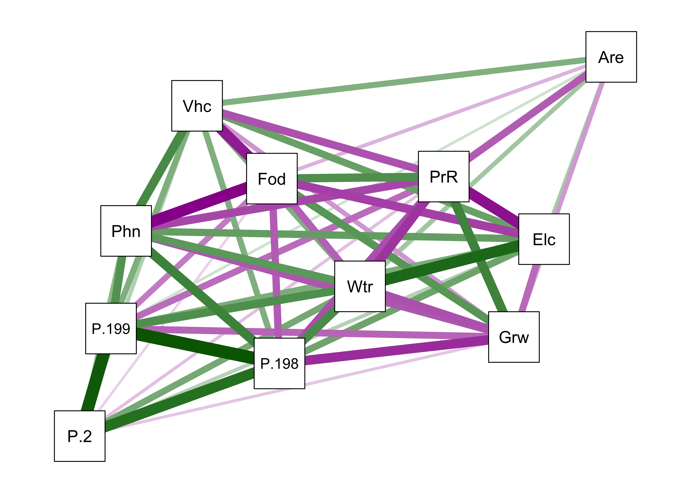
4.2.2 PCA of the cities data
Here’s the principal components analysis of the cities data:
## Call:
## princomp(x = cities_matrix, cor = T)
##
## Standard deviations:
## Comp.1 Comp.2 Comp.3 Comp.4 Comp.5 Comp.6 Comp.7 Comp.8 Comp.9
## 2.46294201 1.31515696 1.00246883 0.92086602 0.83523273 0.50012846 0.48128911 0.35702153 0.17468753
## Comp.10 Comp.11
## 0.10314352 0.05779932
##
## 11 variables and 21 observations.## Importance of components:
## Comp.1 Comp.2 Comp.3 Comp.4 Comp.5 Comp.6 Comp.7
## Standard deviation 2.4629420 1.3151570 1.00246883 0.92086602 0.83523273 0.50012846 0.48128911
## Proportion of Variance 0.5514621 0.1572398 0.09135852 0.07709038 0.06341943 0.02273895 0.02105811
## Cumulative Proportion 0.5514621 0.7087019 0.80006045 0.87715083 0.94057026 0.96330921 0.98436732
## Comp.8 Comp.9 Comp.10 Comp.11
## Standard deviation 0.35702153 0.174687526 0.1031435150 0.0577993220
## Proportion of Variance 0.01158767 0.002774157 0.0009671441 0.0003037056
## Cumulative Proportion 0.99595499 0.998729150 0.9996962944 1.0000000000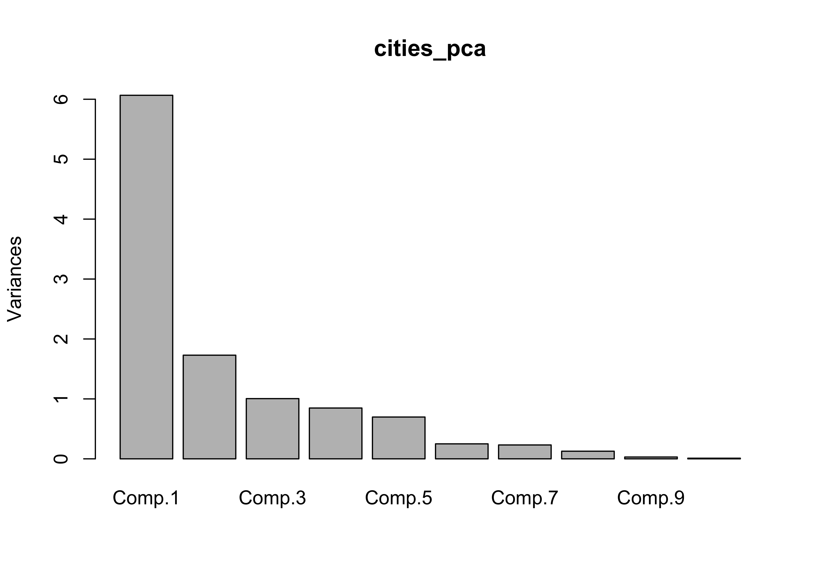
##
## Loadings:
## Comp.1 Comp.2 Comp.3 Comp.4 Comp.5 Comp.6 Comp.7 Comp.8 Comp.9 Comp.10 Comp.11
## Area 0.160 0.299 0.603 0.569 0.141 0.326 0.131 0.195 0.106
## Pop.1980 0.350 -0.340 0.248 -0.123 0.130 0.158 0.677 -0.428
## Pop.1990 0.324 -0.445 0.104 -0.145 0.804
## Pop.2000 0.229 -0.586 0.109 0.228 -0.190 -0.114 -0.571 -0.393
## Growth -0.295 -0.115 0.310 -0.682 0.388 -0.152 0.389
## Food -0.316 -0.263 0.456 -0.167 -0.574 0.502
## PersRoom -0.332 -0.270 -0.241 0.116 0.544 -0.449 0.254 0.417
## Water 0.330 0.229 -0.331 -0.357 0.533 -0.252 -0.376 -0.291 0.169
## Elec 0.315 0.214 0.132 -0.345 -0.483 -0.183 0.414 0.517 -0.111
## Phones 0.331 -0.447 0.364 0.571 -0.291 0.352
## Vehicles 0.282 0.232 -0.272 0.519 -0.209 -0.288 -0.481 -0.372 0.152
##
## Comp.1 Comp.2 Comp.3 Comp.4 Comp.5 Comp.6 Comp.7 Comp.8 Comp.9 Comp.10 Comp.11
## SS loadings 1.000 1.000 1.000 1.000 1.000 1.000 1.000 1.000 1.000 1.000 1.000
## Proportion Var 0.091 0.091 0.091 0.091 0.091 0.091 0.091 0.091 0.091 0.091 0.091
## Cumulative Var 0.091 0.182 0.273 0.364 0.455 0.545 0.636 0.727 0.818 0.909 1.000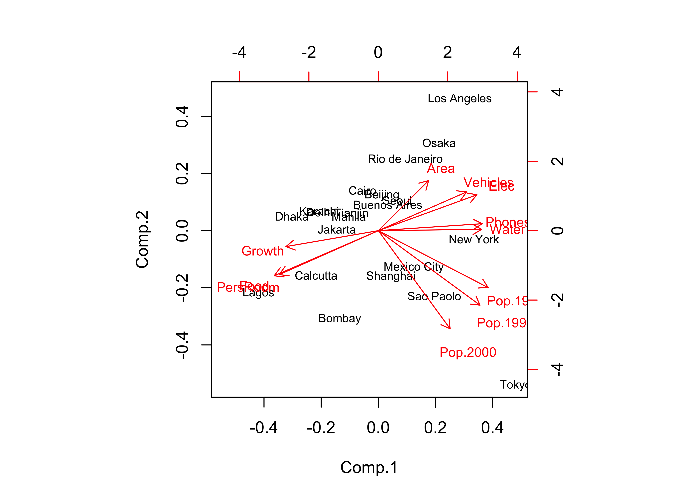
In this case, there were two “important components” and a third that was pretty important, as evidenced by the break in slope of the “screeplot”. The biplot diplays both the loadings (correlations between the original variables and the components) as lablelled vectors, and the component scores as either symbols, or as here when the matrix has rownames, as labels.
The biplot and table of component loadings indicate that the first component includes variables that (more-or-less) trade off developed-world cities against developing-world ones. (Note the opposing directions of the vectors that are sub-parallel to the x-axis.) The second component (population) is noted by vectors and loadings that are (more-or-less) at right angles to the first set, and sub-parallel to the y-axis. (But note that the vector for Pop.1980 is actually more parallel to the x-axis than the y.)
An alternative visualization of the principal component and their relationship with the original variables is provided by the qgraph() function. The original variables are indicted by three-character abbreviations, and the components by numbered nodes.
To implement this, it would be convenient to create a function that creates a qgraph loadings plot. This is done in two stages, the first creating a standard qplot, and the second applying the layout = "spring" argument. Here is the function:
# define a function for producing qgraphs of loadings
qgraph_loadings_plot <- function(loadings_in, title) {
ld <- loadings(loadings_in)
qg_pca <- qgraph(ld, title=title,
posCol = "darkgreen", negCol = "darkmagenta", arrows = FALSE,
labels=attr(ld, "dimnames")[[1]])
qgraph(qg_pca, title=title,
layout = "spring",
posCol = "darkgreen", negCol = "darkmagenta", arrows = FALSE,
node.height=0.5, node.width=0.5, vTrans=255, edge.width=0.75, label.cex=1.0,
width=7, height=5, normalize=TRUE, edge.width=0.75)
}The function has two arguments, a principle components object, from which loadings can be extracted, plus a title.
The princomp() function returns all p components, but the intial analysis suggests that only two, or possibly three components are meaningful. To manage the number of components that are “extracted” (as well as to implement other aspects of the analysis), we can use the psych package:
The qgraph plot is then created by reextracting only two components in this case, and then sending the object created by te principal() function to the qgraph_loadings_plot() function we created above.
# unrotated components
cities_pca_unrot <- principal(cities_matrix, nfactors=2, rotate="none")
cities_pca_unrot## Principal Components Analysis
## Call: principal(r = cities_matrix, nfactors = 2, rotate = "none")
## Standardized loadings (pattern matrix) based upon correlation matrix
## PC1 PC2 h2 u2 com
## Area 0.39 -0.39 0.31 0.690 2.0
## Pop.1980 0.86 0.45 0.94 0.056 1.5
## Pop.1990 0.80 0.59 0.98 0.019 1.8
## Pop.2000 0.56 0.77 0.91 0.087 1.8
## Growth -0.73 0.13 0.54 0.457 1.1
## Food -0.78 0.35 0.73 0.273 1.4
## PersRoom -0.82 0.35 0.80 0.205 1.4
## Water 0.81 -0.01 0.66 0.341 1.0
## Elec 0.77 -0.28 0.68 0.320 1.3
## Phones 0.82 -0.05 0.67 0.332 1.0
## Vehicles 0.69 -0.30 0.57 0.426 1.4
##
## PC1 PC2
## SS loadings 6.07 1.73
## Proportion Var 0.55 0.16
## Cumulative Var 0.55 0.71
## Proportion Explained 0.78 0.22
## Cumulative Proportion 0.78 1.00
##
## Mean item complexity = 1.4
## Test of the hypothesis that 2 components are sufficient.
##
## The root mean square of the residuals (RMSR) is 0.1
## with the empirical chi square 21.58 with prob < 0.95
##
## Fit based upon off diagonal values = 0.97##
## Factor analysis with Call: principal(r = cities_matrix, nfactors = 2, rotate = "none")
##
## Test of the hypothesis that 2 factors are sufficient.
## The degrees of freedom for the model is 34 and the objective function was 6.87
## The number of observations was 21 with Chi Square = 97.36 with prob < 5e-08
##
## The root mean square of the residuals (RMSA) is 0.1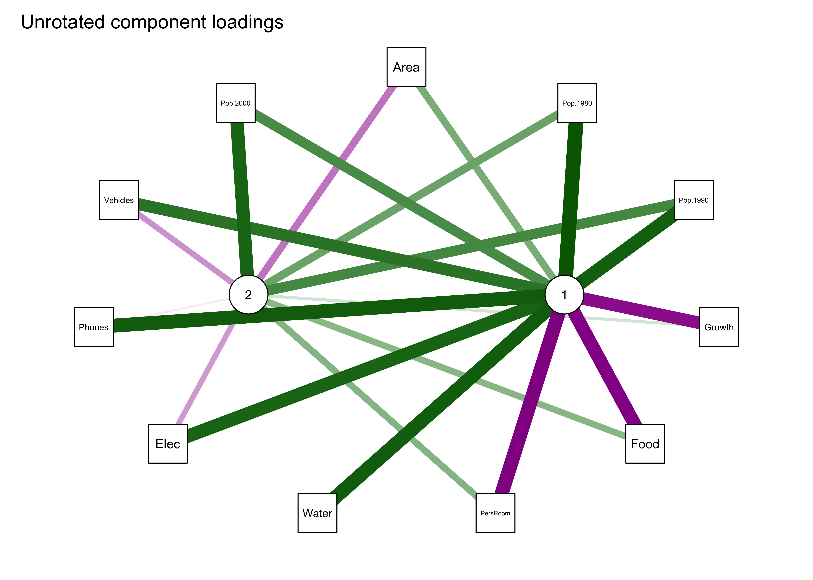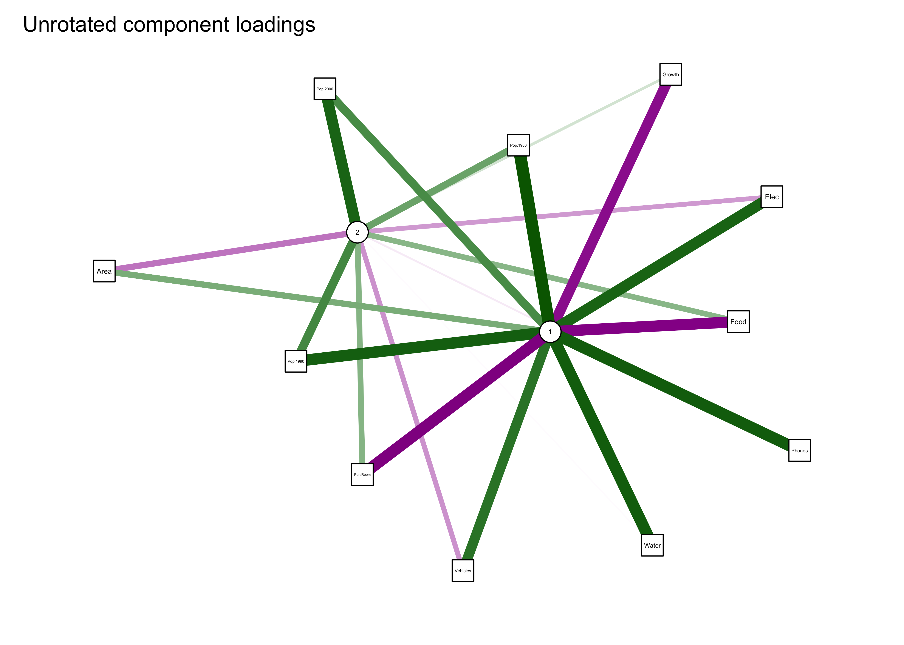
The first plot shows the two components in the middle and the original variables arranged in an ellipse or circle around the components. Positive loadings are shown in green, negative in magenta, with the magnitude of the loadings shown by the width of the network “edges”. The second plot uses the “spring” method to rearrange the plot so that the length of the edges and arrangement of components and variables reflects the magnitude of the loadings.
4.3 “Rotation” of principal components
The interpretation of the components (which is governed by the loadings–the correlations of the original varialbles with the newly created components) can be enhanced by “rotation” which could be thought of a set of coordinated adjustments of the vectors on a biplot. There is not single optimal way of doing rotations, but probably the most common approach is “varimax” rotation in which the components are adjusted in a way that makes the loadings either high positive (or negative) or zero, while keeping the components uncorrelated or orthogonal. One side-product of rotation is that the first, or principal components is no longer optimal or the most efficient single-variable summary of the data set, but losing that property is often worth the incraese in interpretability. The principal() function in the psych package also implements rotation of principal components.
Note the location and linkages of Pop.1980 in the plot.
Here’s the result with rotated components:
# rotated components
cities_pca_rot <- principal(cities_matrix, nfactors=2, rotate="varimax")
cities_pca_rot## Principal Components Analysis
## Call: principal(r = cities_matrix, nfactors = 2, rotate = "varimax")
## Standardized loadings (pattern matrix) based upon correlation matrix
## RC1 RC2 h2 u2 com
## Area 0.55 -0.07 0.31 0.690 1.0
## Pop.1980 0.41 0.88 0.94 0.056 1.4
## Pop.1990 0.28 0.95 0.98 0.019 1.2
## Pop.2000 -0.02 0.96 0.91 0.087 1.0
## Growth -0.65 -0.34 0.54 0.457 1.5
## Food -0.83 -0.20 0.73 0.273 1.1
## PersRoom -0.87 -0.22 0.80 0.205 1.1
## Water 0.65 0.49 0.66 0.341 1.9
## Elec 0.79 0.25 0.68 0.320 1.2
## Phones 0.68 0.45 0.67 0.332 1.7
## Vehicles 0.74 0.18 0.57 0.426 1.1
##
## RC1 RC2
## SS loadings 4.46 3.33
## Proportion Var 0.41 0.30
## Cumulative Var 0.41 0.71
## Proportion Explained 0.57 0.43
## Cumulative Proportion 0.57 1.00
##
## Mean item complexity = 1.3
## Test of the hypothesis that 2 components are sufficient.
##
## The root mean square of the residuals (RMSR) is 0.1
## with the empirical chi square 21.58 with prob < 0.95
##
## Fit based upon off diagonal values = 0.97##
## Factor analysis with Call: principal(r = cities_matrix, nfactors = 2, rotate = "varimax")
##
## Test of the hypothesis that 2 factors are sufficient.
## The degrees of freedom for the model is 34 and the objective function was 6.87
## The number of observations was 21 with Chi Square = 97.36 with prob < 5e-08
##
## The root mean square of the residuals (RMSA) is 0.1biplot.psych(cities_pca_rot, labels=rownames(cities_matrix), col=c("black","red"), cex=c(0.7,0.8),
xlim.s=c(-3,3), ylim.s=c(-2,4))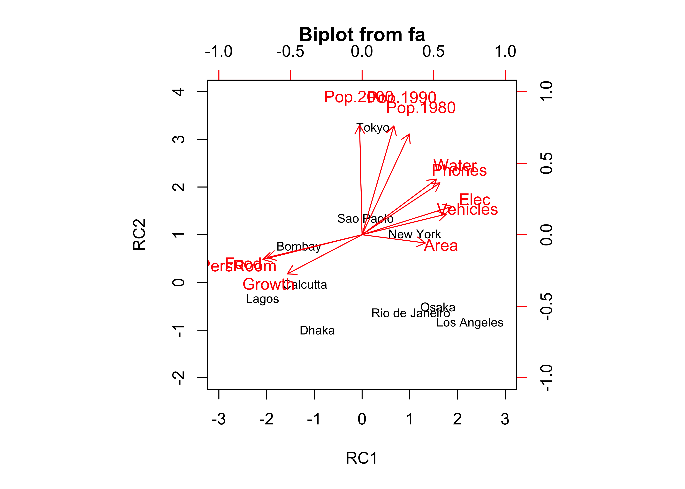 … and the qgraph() plot of the rotated-component results:
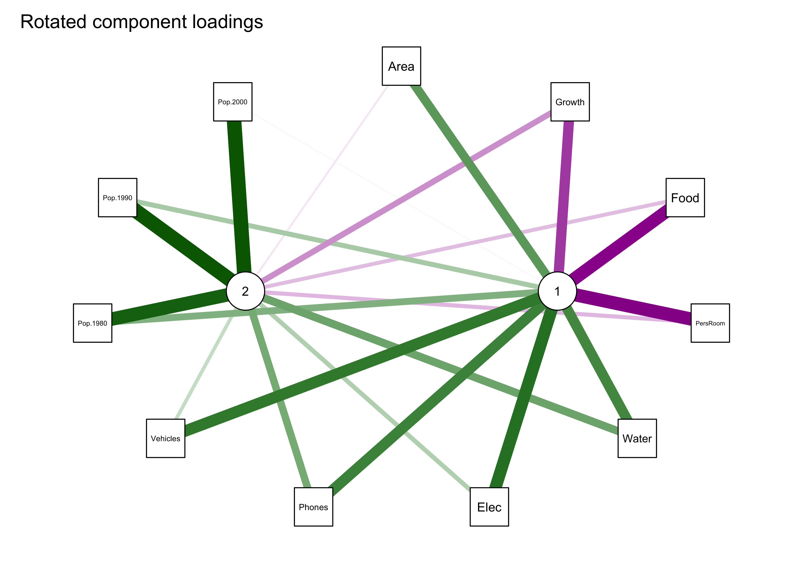
Notice that now all three population variables are now “most highly loaded on” the second component.
5 Factor analyis (FA) and PCA
Factor analysis (FA) can be thought of as a parallel analysis to PCA, and in some ways PCA and be viewed as a special case of FA. Despite their names being used indiscriminantly, the two alaysis do have differing underlying models:
- PCA: maximum variance, maximum simultaneous resemblance motivations
- Factor Analysis: variables are assembled from two major components common “factors” and “unique” factors, e.g. X = m + Lf + u, where X is a maxrix of data, m is the (vector) mean of the variables, L is a p x k matrix of factor loadings f and u are random vectors representing the underlying common and unique factors.
The model underlying factor analysis is:
data = common factors + unique factors
The common factors in factor analysis are much like the first few principal components, and are often defined that way in initial phases of the analysis.
The practical difference between the two analyses now lies mainly in the decision whether to rotate the principal components to emphasize the “simple structure” of the component loadings:
- easier interpretation
- in geographical data: regionalization
5.1 Example of a factor analysis
Here’s a factor analysis of the large-cities data set using the factanal() function:
# cities_fa1 -- factor analysis of cities data -- no rotation
cities_fa1 <- factanal(cities_matrix, factors=2, rotation="none", scores="regression")
cities_fa1##
## Call:
## factanal(x = cities_matrix, factors = 2, scores = "regression", rotation = "none")
##
## Uniquenesses:
## Area Pop.1980 Pop.1990 Pop.2000 Growth Food PersRoom Water Elec Phones Vehicles
## 0.933 0.022 0.005 0.005 0.179 0.437 0.387 0.541 0.605 0.426 0.706
##
## Loadings:
## Factor1 Factor2
## Area 0.129 0.225
## Pop.1980 0.914 0.377
## Pop.1990 0.988 0.136
## Pop.2000 0.967 -0.243
## Growth -0.386 -0.820
## Food -0.316 -0.681
## PersRoom -0.368 -0.691
## Water 0.558 0.384
## Elec 0.366 0.510
## Phones 0.518 0.553
## Vehicles 0.356 0.409
##
## Factor1 Factor2
## SS loadings 3.989 2.766
## Proportion Var 0.363 0.251
## Cumulative Var 0.363 0.614
##
## Test of the hypothesis that 2 factors are sufficient.
## The chi square statistic is 83.44 on 34 degrees of freedom.
## The p-value is 4.86e-06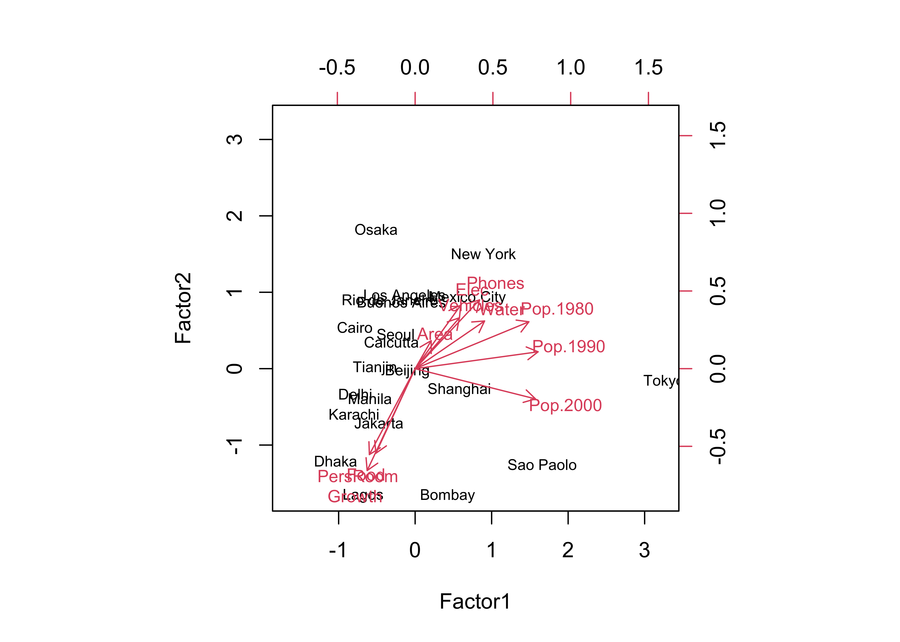
Notice that the biplot looks much the same as that for PCA (as to the loadings, which have the same interpretation–as correlations between the factors and the original variables). A new element of the factor analysis output is the “Uniquenesses” table, which, as it says, describes the uniqueness of individual variables, where values near 1.0 indicate variables that are tending to measure unique properties in the data set, while values near 0.0 indicate variables that are duplicated in a sense by other variables in the data set.
Here’s the qgraph plot:
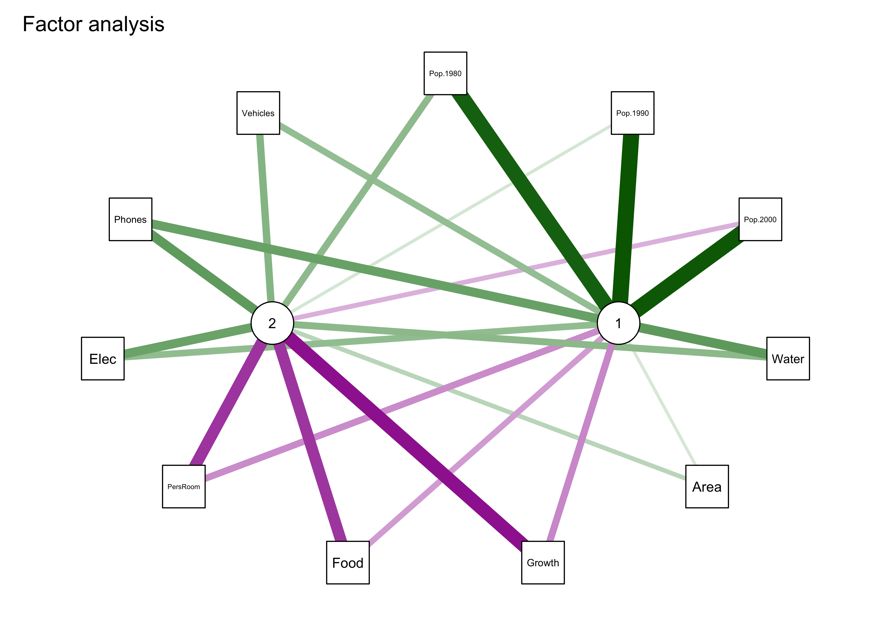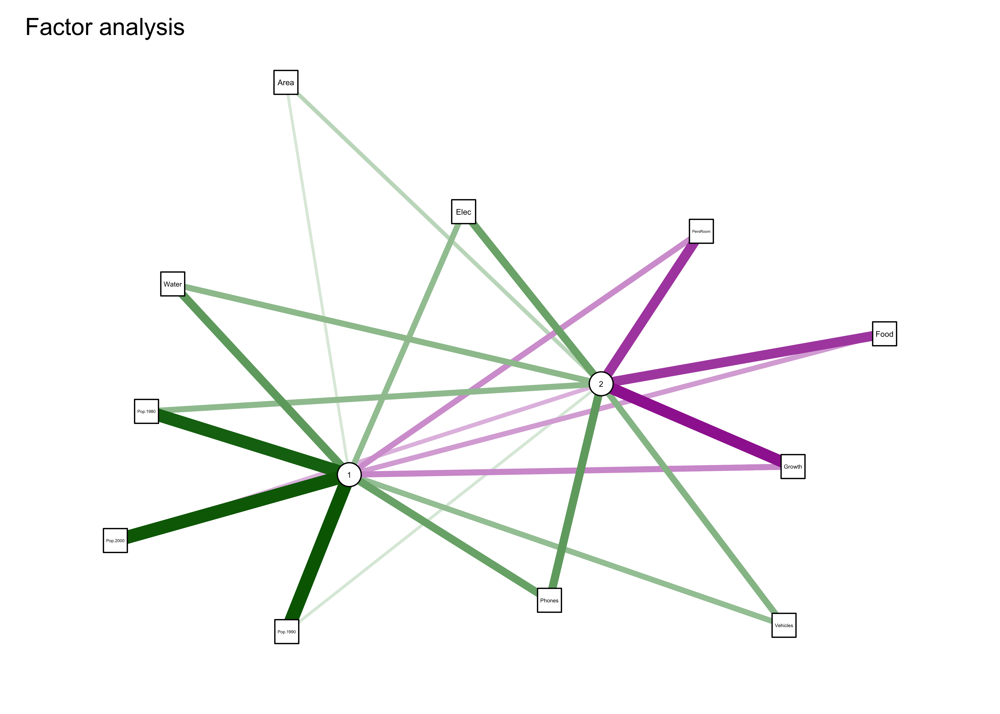
Note the “external” line segments that are scaled to the uniqueness values of each variable, and represent sources of variability extraneous to (or outside of) that generated by the factors.
Here is a “rotated” factor analysis:
# cities_fa2 -- factor analysis of cities data -- varimax rotation
cities_fa2 <- factanal(cities_matrix, factors=2, rotation="varimax", scores="regression")
cities_fa2##
## Call:
## factanal(x = cities_matrix, factors = 2, scores = "regression", rotation = "varimax")
##
## Uniquenesses:
## Area Pop.1980 Pop.1990 Pop.2000 Growth Food PersRoom Water Elec Phones Vehicles
## 0.933 0.022 0.005 0.005 0.179 0.437 0.387 0.541 0.605 0.426 0.706
##
## Loadings:
## Factor1 Factor2
## Area 0.251
## Pop.1980 0.602 0.784
## Pop.1990 0.389 0.919
## Pop.2000 0.997
## Growth -0.892 -0.159
## Food -0.740 -0.127
## PersRoom -0.763 -0.175
## Water 0.516 0.439
## Elec 0.588 0.221
## Phones 0.669 0.356
## Vehicles 0.488 0.237
##
## Factor1 Factor2
## SS loadings 3.801 2.954
## Proportion Var 0.346 0.269
## Cumulative Var 0.346 0.614
##
## Test of the hypothesis that 2 factors are sufficient.
## The chi square statistic is 83.44 on 34 degrees of freedom.
## The p-value is 4.86e-06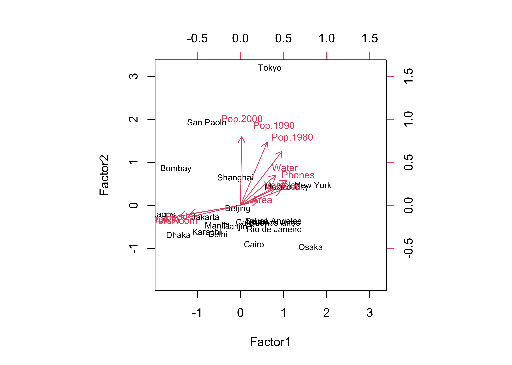
… and the qgraph plot:
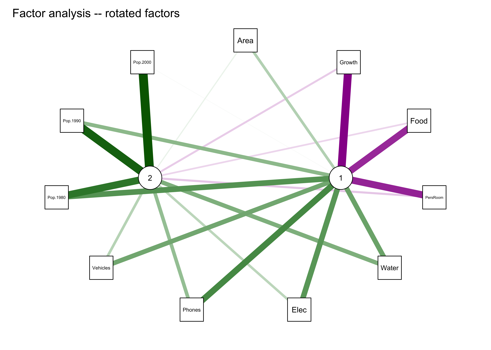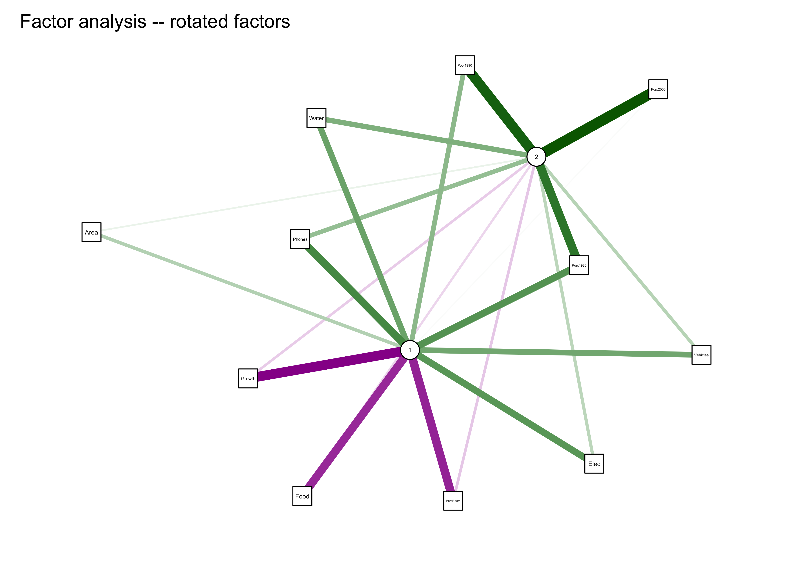
6 A second example: Controls of mid-Holocene aridity in Eurasia
The data set here is a “stacked” data set of output from thirteen “PMIP3” simulations of mid-Holocene climate (in particular, the long-term mean differences between the mid-Holocene simulations and those for the pre-industrial period) for a region in northern Eurasia. The objective of the analysis was to examine the systematic relationship among a number of different climate variables as part of understanding the mismatch between the simulations and paleoenvironmental observations (reconstructions), where the simulations were in general drier and warmer than the climate reconstructed from the data. (See Bartlein, P.J., S.P. Harrison and K. Izumi, 2017, Underlying causes of Eurasian mid-continental aridity in simulations of mid-Holocene climate, Geophysical Research Letters 44:1-9, http://dx.doi.org/10.1002/2017GL074476)
The variables include:
Kext: Insolation at the top of the atmosphereKn: Net shortwave radiationLn: Net longwave ratiation
Qn: Net radiationQe: Latent heatingQh: Sensible heatingQg: Substrate heatingbowen: Bowen ratio (Qh/Qn)alb: Albedota: 850 mb temperaturetas: Near-surface (2 m) air temperaturets: Surface (skin) temperatureua: Eastward wind component, 500 hPa levelva: Northward wind component, 500 hPa levelomg: 500 hPa vertical velocityuas: Eastward wind component, surfacevas: Northward wind component, surfaceslp: Mean sea-level pressureQdv: Moisture divergenceshm: Specific humidityclt: Cloudinesspre: Precipitation rateevap: Evaporation ratepme: P-E ratesm: Soil moisturero: RunoffdS: Change in moisture storagesnd: Snow depth
The data set was assebled by stacking the monthly long-term mean differneces from each model on top of one another, creating a 13 x 12 row by 24 column array. This arrangement of the data will reveal the common variations in the seasonal cycles of the long-term mean differences.
6.1 Read and transform the data
Load necessary packages.
Read the data:
## [1] "Kext" "Kn" "Ln" "Qn" "Qe" "Qh" "Qg" "bowen" "alb" "ta" "tas" "ts"
## [13] "ua" "va" "omg" "uas" "vas" "slp" "Qdv" "shm" "clt" "pre" "evap" "pme"
## [25] "sm" "ro" "dS" "snd"## Kext Kn Ln Qn Qe
## Min. :-13.6300 Min. :-14.1700 Min. :-6.001000 Min. :-13.9000 Min. :-8.0500
## 1st Qu.:-10.4225 1st Qu.: -5.5927 1st Qu.:-1.111500 1st Qu.: -4.0630 1st Qu.:-1.1265
## Median : -6.4320 Median : -2.4285 Median : 0.299050 Median : -1.7405 Median :-0.5851
## Mean : 0.3369 Mean : 0.4261 Mean :-0.005344 Mean : 0.4208 Mean :-0.1175
## 3rd Qu.: 7.7847 3rd Qu.: 3.9592 3rd Qu.: 1.561250 3rd Qu.: 3.1260 3rd Qu.: 0.4831
## Max. : 27.9600 Max. : 18.0700 Max. : 3.333000 Max. : 16.1200 Max. : 7.9230
##
## Qh Qg bowen alb ta
## Min. :-5.1570 Min. :-5.0070 Min. :-9.870e+04 Min. :-0.780800 Min. :-2.2300
## 1st Qu.:-1.9760 1st Qu.:-0.9643 1st Qu.: 0.000e+00 1st Qu.:-0.001758 1st Qu.:-0.7361
## Median :-0.8945 Median :-0.2530 Median : 0.000e+00 Median : 0.356050 Median :-0.3137
## Mean : 0.3968 Mean : 0.1404 Mean : 2.826e+13 Mean : 0.705529 Mean : 0.1110
## 3rd Qu.: 2.0897 3rd Qu.: 1.3645 3rd Qu.: 1.000e+00 3rd Qu.: 1.113250 3rd Qu.: 0.8729
## Max. :12.0900 Max. : 6.3150 Max. : 2.650e+15 Max. : 6.185000 Max. : 3.1420
##
## tas ts ua va omg
## Min. :-2.76900 Min. :-2.88700 Min. :-0.98680 Min. :-0.495200 Min. :-3.320e-03
## 1st Qu.:-0.92268 1st Qu.:-0.96540 1st Qu.:-0.35147 1st Qu.:-0.134500 1st Qu.:-6.360e-04
## Median :-0.42775 Median :-0.43625 Median :-0.09715 Median :-0.003020 Median :-9.845e-05
## Mean :-0.02964 Mean :-0.02853 Mean :-0.07626 Mean : 0.002278 Mean :-1.757e-04
## 3rd Qu.: 0.82620 3rd Qu.: 0.82827 3rd Qu.: 0.15207 3rd Qu.: 0.126825 3rd Qu.: 2.918e-04
## Max. : 3.14600 Max. : 3.34300 Max. : 1.22400 Max. : 0.492300 Max. : 1.370e-03
##
## uas vas slp Qdv shm
## Min. :-0.375000 Min. :-0.13690 Min. :-358.90 Min. :-5.390e-10 Min. :-5.020e-04
## 1st Qu.:-0.104800 1st Qu.:-0.03717 1st Qu.:-114.83 1st Qu.:-5.603e-11 1st Qu.:-9.333e-05
## Median :-0.022700 Median : 0.02635 Median : -11.97 Median :-1.990e-11 Median :-2.340e-05
## Mean :-0.008201 Mean : 0.02238 Mean : -48.91 Mean :-1.825e-11 Mean : 6.629e-05
## 3rd Qu.: 0.092525 3rd Qu.: 0.07550 3rd Qu.: 45.24 3rd Qu.: 3.635e-11 3rd Qu.: 1.655e-04
## Max. : 0.591500 Max. : 0.22940 Max. : 126.30 Max. : 2.030e-10 Max. : 9.930e-04
##
## clt pre evap pme sm
## Min. :-5.8260 Min. :-0.266700 Min. :-0.278200 Min. :-0.26930 Min. :-40.330
## 1st Qu.:-0.8750 1st Qu.:-0.037850 1st Qu.:-0.037825 1st Qu.:-0.04333 1st Qu.:-11.960
## Median : 0.2599 Median :-0.000015 Median :-0.016950 Median : 0.00441 Median : -5.433
## Mean :-0.1085 Mean :-0.012835 Mean :-0.001746 Mean :-0.01109 Mean : -9.501
## 3rd Qu.: 1.0036 3rd Qu.: 0.023350 3rd Qu.: 0.016725 3rd Qu.: 0.03058 3rd Qu.: -3.272
## Max. : 2.4320 Max. : 0.104900 Max. : 0.273700 Max. : 0.10930 Max. : 7.799
##
## ro dS snd
## Min. :-0.288000 Min. :-0.424700 Min. :-0.0056800
## 1st Qu.:-0.020650 1st Qu.:-0.052750 1st Qu.:-0.0000117
## Median :-0.006690 Median : 0.012300 Median : 0.0054200
## Mean :-0.008101 Mean :-0.006516 Mean : 0.0094521
## 3rd Qu.: 0.000247 3rd Qu.: 0.044000 3rd Qu.: 0.0156750
## Max. : 0.439200 Max. : 0.262900 Max. : 0.0593000
## NA's :2# read data
datapath <- "/Users/bartlein/Documents/geog495/data/csv/"
csvfile <- "aavesModels_ltmdiff_NEurAsia.csv"
input_data <- read.csv(paste(datapath, csvfile, sep=""))
mm_data_in <- input_data[,3:30]
names(mm_data_in)
summary(mm_data_in)There are a few fix-ups to do. Recode a few missing (NA) values of snow depth to 0.0:
Remove some uncessary or redundant variable:
# remove uneccesary variables
dropvars <- names(mm_data_in) %in% c("Kext","bowen","sm","evap")
mm_data <- mm_data_in[!dropvars]
names(mm_data)## [1] "Kn" "Ln" "Qn" "Qe" "Qh" "Qg" "alb" "ta" "tas" "ts" "ua" "va" "omg" "uas" "vas" "slp"
## [17] "Qdv" "shm" "clt" "pre" "pme" "ro" "dS" "snd"6.2 Correlations among variables
It’s useful to look at the correlations among the long-term mean differences among the variables. This could be done using a matrix scatterplot (plot(mm_data, pch=16, cex=0.5), but there are enough variables (24) to make that difficult to interpret. Another approach is to look at a corrplot() image:

The plaid-like appearance of the plot suggests that there are several groups of variables whose variations of long-term mean differences throughout the year are similar.
The correlations can also be illustrated by plotting the correlations as a network graph using the qgraph() function, with the strength of the correlations indicated by the width of the lines (or “edges”), and the sign by the color (green = positive and magenta = negative).
qgraph(cor_mm_data, title="Correlations, multi-model ltm differences over months",
# layout = "spring",
posCol = "darkgreen", negCol = "darkmagenta", arrows = FALSE,
node.height=0.5, node.width=0.5, vTrans=255, edge.width=0.75, label.cex=1.0,
width=7, height=5, normalize=TRUE, edge.width=0.75 ) 
A useful variant of this plot is provided by using the strength of the correlations to arrange the nodes (i.e. the variables). This is done by using the “Fruchterman-Reingold” algorithm that invokes the concept of spring tension pulling the nodes of the more highly correlated variables toward one another.
qgraph(cor_mm_data, title="Correlations, multi-model ltm differences over months",
layout = "spring", repulsion = 0.75,
posCol = "darkgreen", negCol = "darkmagenta", arrows = FALSE,
node.height=0.5, node.width=0.5, vTrans=255, edge.width=0.75, label.cex=1.0,
width=7, height=5, normalize=TRUE, edge.width=0.75 ) 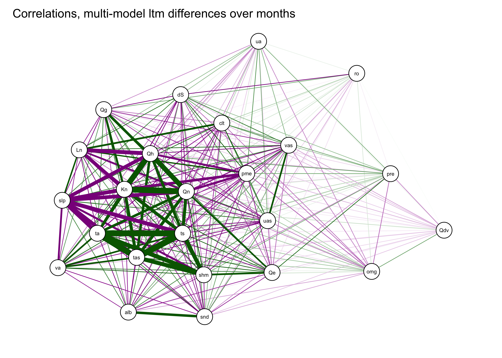
We can already see that there are groups of variables that are highly correlated with one another. For example the three temperatures variables (tas (2-m air temperature), ts (surface or “skin” temperature), ta (850mb temperature)), are plotted close to one another, as are some of the surface energy-balance variables (e.g. Qn and Kn, net radiation and net shortwave radiation).
6.3 PCA of the PMIP 3 data
Do a principal components analysis of the long-term mean differneces using the principal() function from the psych package. Initially, extract eight components:
## Principal Components Analysis
## Call: principal(r = mm_data, nfactors = nfactors, rotate = "none")
## Standardized loadings (pattern matrix) based upon correlation matrix
## PC1 PC2 PC3 PC4 PC5 PC6 PC7 PC8 h2 u2 com
## Kn 0.95 -0.09 0.02 -0.19 0.00 0.12 0.00 -0.14 0.99 0.013 1.2
## Ln -0.79 0.36 0.16 0.09 -0.25 0.02 -0.06 0.21 0.91 0.090 2.0
## Qn 0.94 0.01 0.08 -0.21 -0.08 0.16 -0.02 -0.11 0.98 0.018 1.2
## Qe 0.68 0.44 0.02 -0.03 -0.33 0.44 0.04 0.10 0.97 0.034 3.1
## Qh 0.91 -0.18 -0.04 -0.18 0.08 0.02 -0.05 -0.18 0.94 0.060 1.3
## Qg 0.69 -0.18 0.35 -0.31 -0.04 -0.01 -0.03 -0.15 0.76 0.241 2.2
## alb -0.64 -0.30 -0.32 -0.38 0.09 0.15 -0.03 0.30 0.87 0.126 3.5
## ta 0.91 0.23 -0.13 0.12 0.07 -0.14 0.05 0.08 0.95 0.049 1.3
## tas 0.93 0.23 -0.09 0.12 0.07 -0.10 0.04 0.05 0.96 0.043 1.2
## ts 0.93 0.22 -0.09 0.11 0.08 -0.10 0.04 0.04 0.96 0.043 1.2
## ua -0.26 0.39 0.06 0.10 0.71 0.31 -0.19 0.11 0.88 0.123 2.6
## va 0.73 0.30 -0.06 0.02 0.19 -0.30 0.00 0.07 0.75 0.250 1.9
## omg 0.27 -0.50 0.02 0.53 -0.20 -0.07 0.22 0.24 0.75 0.252 3.7
## uas -0.74 0.09 0.05 -0.06 0.15 0.36 0.42 -0.22 0.94 0.064 2.5
## vas -0.67 0.37 -0.03 0.03 0.13 -0.04 0.57 -0.05 0.93 0.072 2.7
## slp -0.89 -0.14 0.12 0.17 -0.22 -0.05 -0.01 -0.04 0.92 0.083 1.3
## Qdv 0.01 -0.39 0.00 0.70 0.11 0.37 -0.24 -0.11 0.86 0.138 2.6
## shm 0.79 0.37 -0.19 0.08 -0.08 0.06 0.07 0.30 0.92 0.083 2.0
## clt -0.65 0.30 0.44 -0.06 -0.24 -0.05 -0.18 -0.14 0.82 0.179 3.0
## pre 0.02 0.89 0.18 0.02 -0.21 0.20 -0.11 0.06 0.92 0.081 1.4
## pme -0.78 0.38 0.15 0.05 0.19 -0.30 -0.14 -0.04 0.92 0.077 2.2
## ro 0.10 -0.16 0.89 -0.04 0.21 -0.09 0.07 0.25 0.96 0.040 1.4
## dS -0.65 0.38 -0.55 0.07 -0.04 -0.16 -0.13 -0.20 0.96 0.035 3.1
## snd -0.67 -0.28 -0.25 -0.41 -0.02 0.09 -0.10 0.30 0.86 0.141 3.0
##
## PC1 PC2 PC3 PC4 PC5 PC6 PC7 PC8
## SS loadings 12.18 2.85 1.76 1.40 1.09 0.94 0.76 0.68
## Proportion Var 0.51 0.12 0.07 0.06 0.05 0.04 0.03 0.03
## Cumulative Var 0.51 0.63 0.70 0.76 0.80 0.84 0.87 0.90
## Proportion Explained 0.56 0.13 0.08 0.06 0.05 0.04 0.04 0.03
## Cumulative Proportion 0.56 0.69 0.78 0.84 0.89 0.93 0.97 1.00
##
## Mean item complexity = 2.1
## Test of the hypothesis that 8 components are sufficient.
##
## The root mean square of the residuals (RMSR) is 0.03
## with the empirical chi square 69.66 with prob < 1
##
## Fit based upon off diagonal values = 1The analysis suggests that only five components are as “important” as any of the original (standardized) variables, so repeate the analysis extracting just five components:
## Principal Components Analysis
## Call: principal(r = mm_data, nfactors = nfactors, rotate = "none")
## Standardized loadings (pattern matrix) based upon correlation matrix
## PC1 PC2 PC3 PC4 PC5 h2 u2 com
## Kn 0.95 -0.09 0.02 -0.19 0.00 0.95 0.048 1.1
## Ln -0.79 0.36 0.16 0.09 -0.25 0.86 0.137 1.8
## Qn 0.94 0.01 0.08 -0.21 -0.08 0.94 0.056 1.1
## Qe 0.68 0.44 0.02 -0.03 -0.33 0.76 0.237 2.2
## Qh 0.91 -0.18 -0.04 -0.18 0.08 0.91 0.094 1.2
## Qg 0.69 -0.18 0.35 -0.31 -0.04 0.73 0.266 2.1
## alb -0.64 -0.30 -0.32 -0.38 0.09 0.76 0.244 2.7
## ta 0.91 0.23 -0.13 0.12 0.07 0.92 0.077 1.2
## tas 0.93 0.23 -0.09 0.12 0.07 0.94 0.058 1.2
## ts 0.93 0.22 -0.09 0.11 0.08 0.94 0.057 1.2
## ua -0.26 0.39 0.06 0.10 0.71 0.74 0.264 1.9
## va 0.73 0.30 -0.06 0.02 0.19 0.66 0.344 1.5
## omg 0.27 -0.50 0.02 0.53 -0.20 0.64 0.359 2.8
## uas -0.74 0.09 0.05 -0.06 0.15 0.58 0.423 1.1
## vas -0.67 0.37 -0.03 0.03 0.13 0.60 0.403 1.7
## slp -0.89 -0.14 0.12 0.17 -0.22 0.91 0.086 1.3
## Qdv 0.01 -0.39 0.00 0.70 0.11 0.65 0.348 1.6
## shm 0.79 0.37 -0.19 0.08 -0.08 0.82 0.179 1.6
## clt -0.65 0.30 0.44 -0.06 -0.24 0.77 0.234 2.6
## pre 0.02 0.89 0.18 0.02 -0.21 0.86 0.137 1.2
## pme -0.78 0.38 0.15 0.05 0.19 0.81 0.190 1.7
## ro 0.10 -0.16 0.89 -0.04 0.21 0.88 0.118 1.2
## dS -0.65 0.38 -0.55 0.07 -0.04 0.88 0.118 2.6
## snd -0.67 -0.28 -0.25 -0.41 -0.02 0.75 0.246 2.4
##
## PC1 PC2 PC3 PC4 PC5
## SS loadings 12.18 2.85 1.76 1.40 1.09
## Proportion Var 0.51 0.12 0.07 0.06 0.05
## Cumulative Var 0.51 0.63 0.70 0.76 0.80
## Proportion Explained 0.63 0.15 0.09 0.07 0.06
## Cumulative Proportion 0.63 0.78 0.87 0.94 1.00
##
## Mean item complexity = 1.7
## Test of the hypothesis that 5 components are sufficient.
##
## The root mean square of the residuals (RMSR) is 0.05
## with the empirical chi square 231.12 with prob < 0.00063
##
## Fit based upon off diagonal values = 0.99##
## Loadings:
## PC1 PC2 PC3 PC4 PC5
## Kn 0.953 -0.187
## Ln -0.795 0.365 0.160 -0.253
## Qn 0.943 -0.205
## Qe 0.679 0.440 -0.326
## Qh 0.912 -0.180 -0.184
## Qg 0.695 -0.177 0.349 -0.311
## alb -0.645 -0.297 -0.317 -0.378
## ta 0.914 0.228 -0.126 0.123
## tas 0.927 0.232 0.118
## ts 0.933 0.216 0.108
## ua -0.262 0.389 0.710
## va 0.725 0.299 0.190
## omg 0.274 -0.496 0.527 -0.204
## uas -0.736 0.148
## vas -0.666 0.366 0.134
## slp -0.894 -0.145 0.116 0.174 -0.223
## Qdv -0.392 0.698 0.110
## shm 0.794 0.374 -0.190
## clt -0.648 0.302 0.439 -0.242
## pre 0.887 0.176 -0.211
## pme -0.777 0.382 0.149 0.188
## ro -0.164 0.893 0.215
## dS -0.654 0.379 -0.551
## snd -0.669 -0.275 -0.253 -0.406
##
## PC1 PC2 PC3 PC4 PC5
## SS loadings 12.180 2.852 1.763 1.395 1.085
## Proportion Var 0.507 0.119 0.073 0.058 0.045
## Cumulative Var 0.507 0.626 0.700 0.758 0.803This result could also be confirmed by looking at the “scree plot”:

6.4 qgraph plot of the principal components
The first plot below shows the components as square nodes, and the orignal variables as circular nodes. The second modifies that first plot by applying the “spring” layout.
qgraph_loadings_plot(mm_pca_unrot, title="Unrotated component loadings, all models over all months")

This result suggests (as also does the scree plot) that there is one very important (i.e. “principal” component) that is highly correlated with (or “loads heavily on”) a number of variables, with subsequent components correlated with mainly with a single variable.
6.5 Rotated components
The interpretability of the componets can often be improved by “rotation” of the components, which amounts to slightly moving the PCA axes relative to the original variable axes, while still maintaining the orthogonality (or “uncorrelatedness”) of the components. This has the effect of reducing the importance of the first component(s) (because the adjusted axes are no longer optimal), but this trade-off is usually worth it.
Here are the results:
## Principal Components Analysis
## Call: principal(r = mm_data, nfactors = nfactors, rotate = "varimax")
## Standardized loadings (pattern matrix) based upon correlation matrix
## RC1 RC2 RC3 RC4 h2 u2 com
## Kn 0.67 -0.67 0.22 0.10 0.95 0.048 2.2
## Ln -0.42 0.78 -0.04 0.09 0.80 0.201 1.6
## Qn 0.71 -0.58 0.26 0.15 0.94 0.062 2.3
## Qe 0.78 -0.08 0.07 0.19 0.66 0.344 1.2
## Qh 0.59 -0.72 0.15 0.06 0.90 0.100 2.1
## Qg 0.38 -0.54 0.51 0.18 0.73 0.268 3.0
## alb -0.75 -0.05 -0.33 0.25 0.75 0.253 1.6
## ta 0.89 -0.35 -0.02 -0.05 0.92 0.082 1.3
## tas 0.90 -0.35 0.02 -0.04 0.94 0.063 1.3
## ts 0.90 -0.37 0.03 -0.04 0.94 0.062 1.3
## ua 0.02 0.47 -0.05 0.08 0.23 0.767 1.1
## va 0.75 -0.21 0.02 0.08 0.62 0.380 1.2
## omg 0.06 -0.33 0.09 -0.69 0.60 0.401 1.5
## uas -0.56 0.47 -0.08 0.11 0.56 0.445 2.1
## vas -0.32 0.64 -0.20 0.14 0.58 0.421 1.8
## slp -0.76 0.49 -0.03 -0.19 0.86 0.136 1.9
## Qdv -0.06 -0.05 -0.01 -0.80 0.64 0.360 1.0
## shm 0.87 -0.21 -0.12 0.05 0.81 0.186 1.2
## clt -0.38 0.67 0.28 0.19 0.71 0.293 2.2
## pre 0.50 0.67 0.04 0.34 0.82 0.182 2.4
## pme -0.41 0.77 -0.05 0.13 0.77 0.226 1.6
## ro -0.05 0.03 0.91 -0.05 0.84 0.164 1.0
## dS -0.28 0.53 -0.71 0.13 0.88 0.120 2.3
## snd -0.77 -0.01 -0.28 0.29 0.75 0.247 1.6
##
## RC1 RC2 RC3 RC4
## SS loadings 8.79 5.66 2.08 1.65
## Proportion Var 0.37 0.24 0.09 0.07
## Cumulative Var 0.37 0.60 0.69 0.76
## Proportion Explained 0.48 0.31 0.11 0.09
## Cumulative Proportion 0.48 0.79 0.91 1.00
##
## Mean item complexity = 1.7
## Test of the hypothesis that 4 components are sufficient.
##
## The root mean square of the residuals (RMSR) is 0.06
## with the empirical chi square 290.26 with prob < 1.5e-06
##
## Fit based upon off diagonal values = 0.99 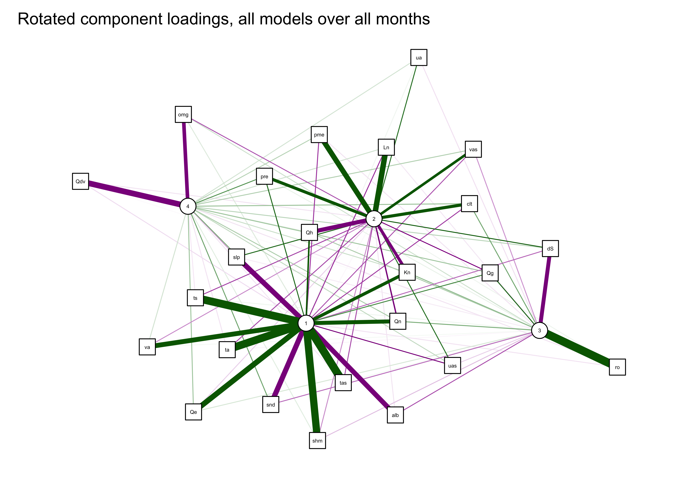
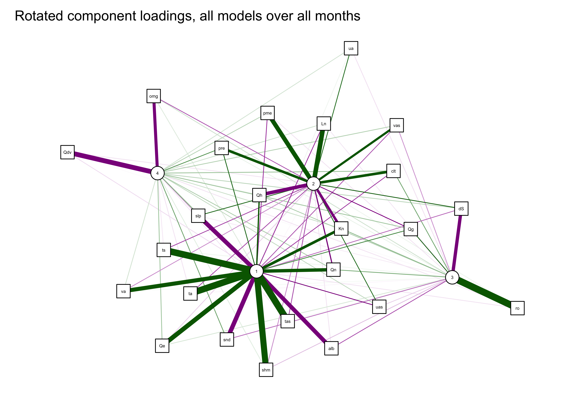
7 Readings
- Chapter 25, Multivariate Statistics, in Crawley, M.J. (2013) The R Book, Wiley. To get to the book, visit http://library.uoregon.edu, login, and search for the 2013 edition of the book. Here’s a direct link, once you’re logged on: http://onlinelibrary.wiley.com/book/10.1002/9781118448908
- Maindonald (Using R…): ch. 6, cex=c(0.7,0.8)